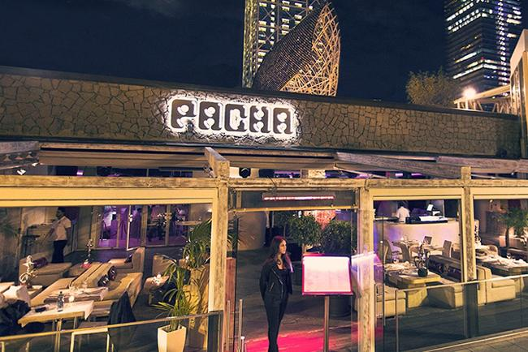
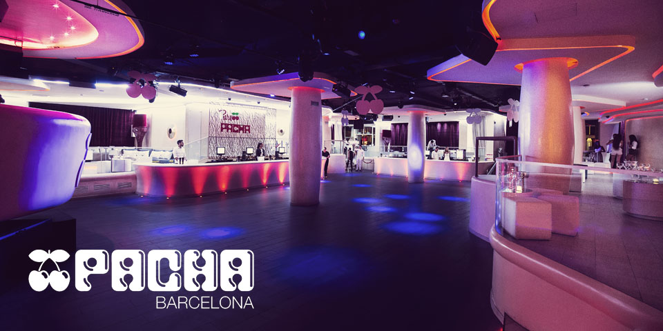
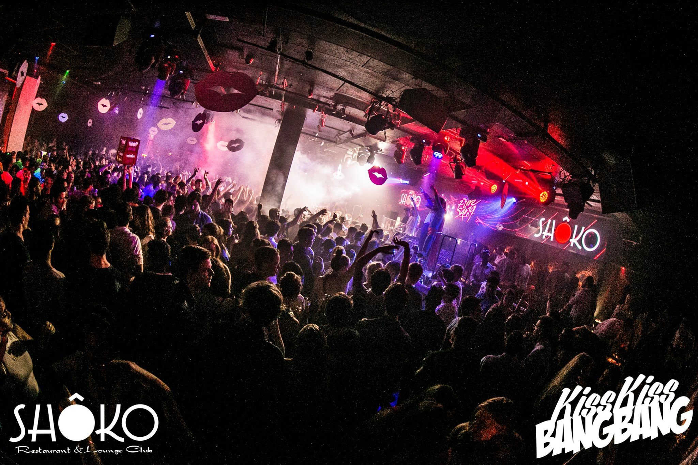

Opium
La discoteca Opium Barcelona ofrece diferentes géneros musicales como por ejemplo música house comercial, reggaeton o electrónica y DJ's invitados reconocidos mundialmente en sus fiestas o eventos que organiza cada semana y donde la discoteca Opium Barcelona se encuentra ubicada en el Paseo Marítimo de la Barceloneta y que además cuenta con una terraza al aire libre enfrente del mar mediterráneo, siendo así una de las mejores discotecas de Barcelona.
Precio de las entradas
La discoteca Opium Barcelona dispone de una Lista Opium Barcelona que ofrece a sus clientes la posibilidad de utilizarla para poder entrar gratis o con descuento a sus fiestas nocturnas que ofrece cada día de la semana y que tanto tú como tus amigos podéis utilizarla sin ningún problema. Normalmente, el Precio de la discoteca Opium Barcelona suele ser entre unos 15€ o 20€ por persona para poder acceder pero dependiendo del tipo de fiesta nocturna que haya y el del día de la semana, el precio puede variar.
Pacha Barcelona
La discoteca Pacha Barcelona es sin duda una de las mejores discotecas de Barcelona debido a su magnífica terraza al aire libre con vistas directas al mar mediterráneo y que además cuenta con servicio de restaurante para comidas y cenas. En las fiestas y eventos de la discoteca Pacha Barcelona podrás encontrarte con la mejor música reggaeton, house comercial y electrónica del momento.
Es importante también tener en cuenta cuál es el código de vestimenta y cuál es la edad mínima de acceso permitida para poder entrar a la discoteca Pacha Barcelona en sus fiestas y eventos semanales, además el precio de la entrada suele ser bastante elevado pero con nosotros podrás entrar gratis o con descuento con tus amigos.
Shoko
La discoteca Shoko Barcelona es una de las mejores discotecas de Barcelona donde ofrece servicio de restaurante durante el día y servicio de discoteca durante la noche, y se encuentra ubicada en primera línea de la playa con una terraza al aire libre abierta todos los días y noches de la semana. La discoteca Shoko Barcelona es reconocida internacionalmente donde agrupa increíbles fiestas y eventos nocturnos donde aparecen DJ's invitados y artistas famosos para dar espectáculos en directo a sus clientes más fieles.
Normalmente la música que suena en las fiestas y eventos de la discoteca Shoko Barcelona suele ser entre hip hop, rnb y reggaeton mezclados entre sí para dar la mejor música del momento y que el cliente pueda descubrir las noches más espectaculares de Barcelona.